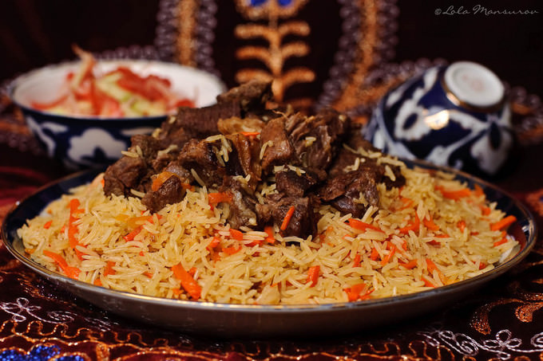

Plov is a very popular and traditional food in Central Asia. Plov is Uzbekistan's national dish, it's a source of delicious pride throughout the country and everyone has their own spin on it. Because so simple to prepare, plov is often served at large gatherings, such as weddings, holiday parties, and birthdays. Normally uzbeks eat plov once or twice time a week moslty in weekend or on Thesday:).
If you are unfamiliar with Uzbekistan, it’s a Central Asian nation that sits at the border of Turkmenistan, Kazakhstan and Kyrgyzstan. A former Soviet republic and a stopping point on the Silk Road (the ancient trading route between China and the Mediterranean), the country boasts a delicious cuisine that has been influenced by many different cultures over the centuries. Plov is a perfect example of Uzbekistan’s rich food history.
Prep time:15 minutes
Traditionally, plov is best made with lamb. Its rich and savory flavors are signature to the dish. However, many also like to use beef. Below, find the best cuts to use for plov:
Bone-in pork shoulder, bone-in leg, or sirloin chop (the marrow from the bone adds a wonderful, fatty flavor)
Short ribs, ribeye, New York Strip, stew meat, or chuck roast
Wash the rice under the tap until clear, cover with cold water and let it soaks for a while.
Cut the meat with bones into match-box pieces.
Cut the carrots into 0.5x0.5 cm thick sticks.
Slice onions into thin rings or half-rings.
Clean heads of garlic from the remains of roots and dirt.
Heat oil in the cattle or dutch oven on a very high flame, deep-fry meat until golden-brown, in 3-4 batches. Fry the onions until golden, add meat to the cattle, stir well to prevent onion from burning. Add carrot, stir from time to time, until it starts to wilt and browns a little (15-20 min). Add 2/3 of the cumin - rub it in your palms a little to release flavor, stir gentliy to keep carrot from
Lower gas to moderate, pour hot water just to cover all the goods, add salt and let it simmer for 40 min to 1.5 hours until almost all water evaporate and meat became tender and juicy. Do not stir.
Drain rice well, place it on top the meat and vegs in one layer, stick the garlic and whole chillies in it, and carefully pour boiling water over it (place a spoon or ladle on top of the rice to keep the rice layer from washaway). Cover the rice with about 2 cm of water, let it boil. Add salt to make the water a bit over-salted. When water will go down the rice, reduce the gas a bit, keeping it boils rapidly. Check when it will evaporate and absorb into rice completely - rice should remain rather al dente. Make a holes in the rice to the bottom of a vessel to check the water level.
Reduce gas to absolute min, cover tightly with the lid and let it steam 20 minutes. Turn of the heat, remove the garlic and chillies on the separate plate. Carefully mix rice with meat and carrots, if the rice tastes a bit blind add some salt, mix and let it stand for 5 minutes. Pile the plov on a big warmed plate and serve with garlic, chilies and plain thinly sliced tomato-sweet onions-chili-salt salad.